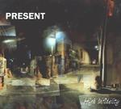

Home Artist links Label link

Present - High Infidelity
| Artist: | Present |
| Title: | High Infidelity |
| Label: | Carbon 7 C7-058 |
| Length(s): | 48 minutes |
| Year(s) of release: | 2001 |
| Month of review: | [04/2002] |
Line up
Roger Trigaux - guitar, vocals
Reginald Trigaux - guitar, vocals
Dave Kerman - drums, percussion, vocals
Pierre Chevalier - pianos, keyboards, organ, mellotron, vocals
Keith Macksoud - bass
Matthieu Safatly - cello, vocal
Fred Becker - alto and tenor sax
Dominic Ntoumos - trumpet, flugelhorn
Udi Koomran - sound
with
Yuval Mesner - cello
Meidad Zaharia - accordion
Tracks
| 1) | Souls For Sale Part 1 | 3.17
|
| 2) | Souls For Sale Part 2 | 3.27
|
| 3) | Souls For Sale Part 3 | 3.41
|
| 4) | Souls For Sale Part 4 | 5.29
|
| 5) | Souls For Sale Part 5 | 4.58
|
| 6) | Souls For Sale Part 6 | 6.40
|
| 7) | Strychnine For Christmas Part 1 | 3.57
|
| 8) | Strychnine For Christmas Part 2 | 6.55
|
| 9) | Rève De Fer | 9.24
|
Summary
The seventh Present album, again on the Belgian Carbon 7 label. A few people
left, a few new ones came, but the Trigaux kernel is still intact.
The music
Souls For Sale is one the three songs on this album and clocks at 27.31.
The opening combines a tense kind of Rock In Opposition with big band
music (by means of the trumpet) and intense Crimsonesque chords on the
guitar. The bass presence is strong, the drumming is varied.
The music might as well have been made to accompany a movie of some kind.
The second part is sinister with whispered vocals. The intensity of the
music is however preserved. Then the first part returns with its staccato
sound. Part three finds us in the presence of violin and cello with the
tension still not letting off. Of course, the music is deeply drenched
in dischord and dissonant, with plenty of tension building repetition,
but also quite a bit of thematic variation. The music is not strongly
focused on melody, no easy ones at least. The goal of the music is
to evoke a picture and this the band does extremely well. At times the music
borders on the industrial with its dark percussive feel, while discordant
piano and harpsichord punctuates the long chords on guitar and violin.
It simply has to be experienced, being not easy to describe.
A low grumbling bass takes the fore with a chamber orchestra like
pluckings in part four. The guitar resonates throughout, but always a bit
in the back. Part five features the slow asthmatic breathing of one of the
vocalist as well as the angry vocals of one of the others. The music
has something of a string/wind orchestra, but of a more confronting kind than
the usual one. This part especially is intense and spooky with tortured
vocals. In part 6 the music is lighter again with plenty of piano and
a somewhat tango like feel. Melodically there is something of the
Middle-East in here. The melodic lines are oft repeated as always as
the music slowly but unswervably continues. The final part brings back
the horn section of the first part and the clanging of chains (I was
reminded of this scene in Dickens A Christmas Carol where the colleague
of the protagonist is walking around chained and all). Anyway, a person
is stabbed here and drops to the ground with a thud, which wraps up this
long track.
Almost eleven minutes long is the next one, Strychnine For Christmas,
a horror story about a father and his family (you can now fill in the details
yourself). This is a slow and ponderous track with plenty of cello/violin
and instruments setting in. The vocals are psychedelic and reminded me
a bit of a vocoded Peter Hammill. At this point the music becomes quite a
bit more energetic. The horn section does plenty of work right here.
The music winds down as we move into part two, which is dark, thudding,
brooding like King Crimson. The vocals are somewhat flat and the music
is quite melodic with plenty of soft mellotron in the back.
The second part is extremely repetitive.
R&e;ve De Fer is the shortest of the three tracks, slightly under ten minutes.
It opens with a pounding bass and ethereal guitar. The melodies are again
somewhat Middle-Eastern, not surprising maybe, because the music was largely
recorded in Tel-Aviv. Also, the guitar reminds me strongly of the part in Jesus
Christ Superstar where Judas decides to commit suicide. The music becomes
in a sense quite cacaphonic here with so many things happening. In a way
this track harkens a bit back to the past, with its organ sound. The
repetitive guitar is typically Crimson, the meandering tormented sax however
tells a different story.
Conclusion
Yes, it is time for another great record from Present. In the RIO corner
they have grown to become my favourites with their dark sound, always tense,
always exciting and always refreshing. The music is not for everybody tho with
its dissonant and dischordant twists, the intense darker emotions that play
a role in it. Lovers of RIO and the avantgarde ought to have a go certainly,
because this is one of the best released in that vein of late.
© Jurriaan Hage